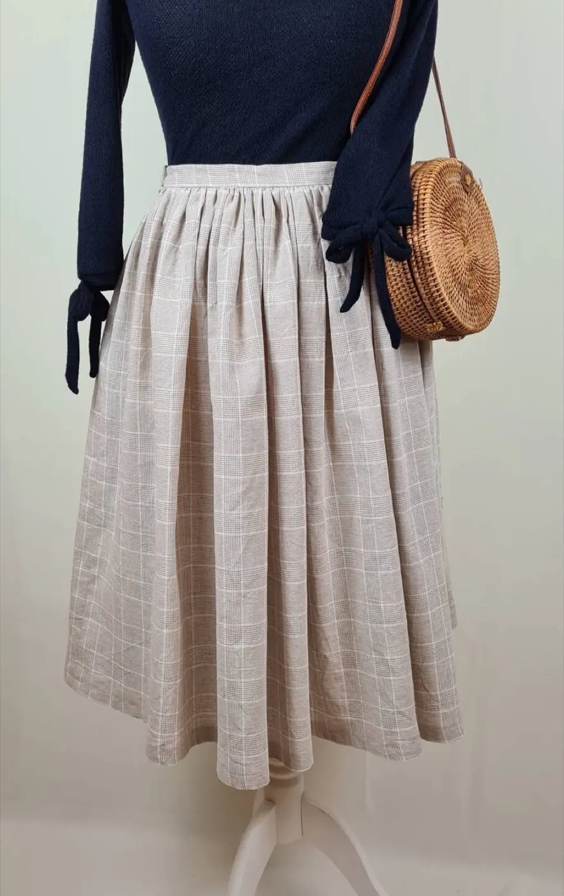

Mini-Atelier · Ramsen, Pfalz
Flora & Grete Handgemachte Einzelstücke
Röcke, Kleider und Kragen aus Leinen, Musselin und echten Vintage-Stoffen. Mit Hand und Herz genäht, gern auf deine Maße, in meinem kleinen Atelier in der Pfalz.
5,0 aus 38 Bewertungen115 Verkäufeseit 2021 auf Etsy


Kollektion
Lieblingsstücke aus dem Atelier
Jedes Teil entsteht einzeln an meiner Nähmaschine. Viele Stoffe hatten schon ein erstes Leben als Bettwäsche oder Kissenbezug, und genau das macht sie so besonders.
Mein Laden auf Etsy
Bestellen, Maße angeben, Fragen stellen: Das alles geht ganz einfach in meinem Etsy-Shop.
Etsy-Shop besuchen- Bewertung
- 5,0 aus 38 Bewertungen
- Verkäufe
- 115glückliche Päckchen
- Auf Etsy seit
- 2021verschickt in Graskartons
Alle Stücke
Der ganze Laden auf einen Blick
Vom Maßrock bis zu Stulpen aus Walkloden. Tippe ein Teil an, dann siehst du alle Fotos und Details.
Über mich
Hi, ich bin Cathrin.

Ich nähe so, wie ich selbst gern Kleidung trage: bequem, mit Taschen, aus Stoffen, die sich gut anfühlen und lange halten. Wenn du etwas Besonderes suchst, schreib mir einfach. Meistens finden wir zusammen eine Lösung.

Stimmen
Was ihr mir schreibt
38 Bewertungen auf Etsy, alle mit fünf Sternen. Jede einzelne freut mich jedes Mal wieder riesig.
Termine & Aktuelles
Wo du mich triffst
Märkte, offenes Atelier und alles, was gerade wichtig ist. Komm gern vorbei und fühl die Stoffe selbst.
Kalender
Aktuelles & Links
Anprobe im Atelier
Komm vorbei und probier an
Atelier & Kontakt
Besuch in Ramsen
Mein Atelier liegt in Ramsen am Rand des Stumpfwalds, mitten in der Pfalz. Vorbeikommen kannst du nach Absprache, am einfachsten über den Anprobe-Planer.
Karte
Wenn du die Karte lädst, werden Daten an Google übertragen. Mehr dazu in der Datenschutzerklärung.
In Google Maps öffnenFragen